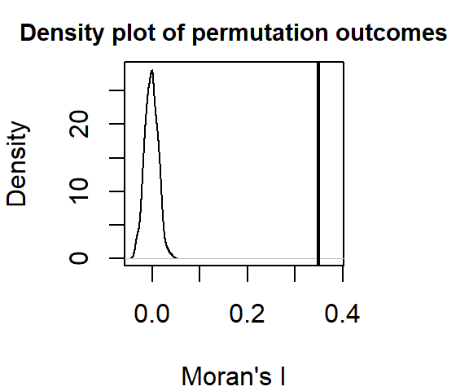
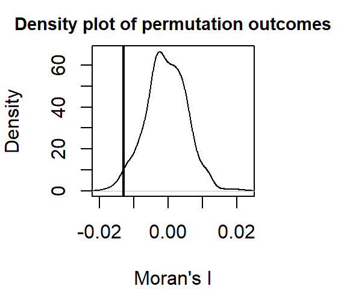

library(sf)
library(spdep)
library(RColorBrewer)Moran’s I in R: Distance bands
Data for this tutorial can be downloaded from here. Don’t forget to unzip the files to a dedicated folder on your computer.
Be sure to set the R session to the project folder via Session >> Set Working Directory >> Choose Directory.
We will make use of the following packages:
Loading and visualizing the data
Load the Massachusetts income data (values are aggregated at the census tract level).
# Load the shapefile
s <- st_read("MA_income.shp")Plot the data.
color <- brewer.pal(8, "Greens")
plot(s["Income"], nbreaks = 8, breaks = "quantile", pal = color, border = NA)Moran’s I as a function of a distance band
We will explore spatial autocorrelation as a function of distance bands. Instead of defining neighbors as contiguous polygons, we will define neighbors based on distances to polygon centers. A neighboring polygon will be defined as falling within a certain distance of a polygon of interest if its centroid (defined as a point) falls within the distance of the polygon of interest’s centroid. This will therefore require that we compute the centroid of each census tract polygon using st_point_on_surface. The centroids’ coordinate pairs will then be extracted using the st_coordinate function.
s.center <- st_point_on_surface(s)
s.coord <- st_coordinates(s.center)The object s.coord stores all pairs of coordinate values from the census tracts’ centroids.
Next, we will define a neighbor as including all polygon centers that are within 5 km (or 5,000 map units in this example) of each polygon.
s.dist <- dnearneigh(s.coord, 0, 5000) Warning in dnearneigh(s.coord, 0, 5000): neighbour object has 138 sub-graphsThe dnearneigh function takes three parameters: the coordinate values s.coord, the radius for the inner radius of the annulus band (first number in the function), and the radius for the outer annulus band (second number in the function). In our example, the inner annulus radius is 0 and the outer annulus radius is 5000 which implies that all polygon centers up to 5 km are considered neighbors (i.e. the current example creates a full circle search radius).
An example of polygons (in white) falling within 5 km of one MA census tract (in dark green) is shown in the following figure:
Note that large polygons will have fewer neighbors given the increased distance between their centroids and neighboring centroids as seen in the following example:
As another example, if we chose to restrict the neighbors to all polygon centers between 40 km and 45 km, then we would define a search annulus (instead of a circle) as:
s.dist <- dnearneigh(s.coord, 40000, 45000) Examples of neighbors using this definition are shown next:

Continuing with our 0 to 5 km distance band neighbor definition, we will create the list of neighboring polygons for each polygon in the dataset.
lw <- nb2listw(s.dist, style="W", zero.policy = TRUE) Next, we’ll run the MC simulation.
MI <- moran.mc(s$Income, lw, nsim=599, zero.policy = TRUE) Now, let’s plot the results.
plot(MI, xlab = "Moran's I") 
Display p-value and other summary statistics.
MI
Monte-Carlo simulation of Moran I
data: s$Income
weights: lw
number of simulations + 1: 600
statistic = 0.35028, observed rank = 600, p-value = 0.001667
alternative hypothesis: greaterIn this example, it’s clear that there is a strong spatial autocorrelation when defining neighbors as all census tracts within 5 km from a census tract of interest. None of the simulated Moran’s I values under the null hypothesis were more extreme than our observed Moran I value.
Now, let’s run a Moran’s I analysis using a 40 to 45 km distance band as a “neighborhood” definition:
s.dist <- dnearneigh(s.coord, 40000, 45000)
lw <- nb2listw(s.dist, style="W", zero.policy = TRUE)
MI <- moran.mc(s$Income, lw, nsim=599, zero.policy = TRUE)
plot(MI, xlab = "Moran's I") 
MI
Monte-Carlo simulation of Moran I
data: s$Income
weights: lw
number of simulations + 1: 600
statistic = -0.012984, observed rank = 12, p-value = 0.98
alternative hypothesis: greaterThe output differs from that shown earlier. Here, the Moran’s I analysis suggests a slightly more dispersed pattern than expected when comparing income values that are 40 to 45 km away.
Note the high p-value! Recall that by default, the moran.mc function reports the fraction of simulated values that are greater than the observed value. If we are interested in knowing the fraction that is less than the observed value (i.e. more dispersed), we can subtract the reported value from 1 or, we can rerun the moran.mc function with alternative="less". In our example, the probability that a random process could have generated a pattern as dispersed as ours is 1 - 0.98 = 0.02 (or 2 if reported as a percentage).
Moran’s I as a function of multiple distance bands
Note that you will not be expected to run this script in your final exam. But you should be able to interpret the output if asked.
We can extend this analysis by calculating a Moran’s I index (and p.value) at different distance bands. This gives us the change in spatial autocorrelation as a function of distance.
We first create a “for” loop that iterates across a range of distance band values.
# Define the distance bands (note that each band is defined
# by an annulus)
start <- 0 # Starting distance in meters (the From)
end <- 125000 # Ending distance in meters (the To)
incr <- 5000 # Distance increment (which also defines the annulus width)
incr.v <- seq(start, end, incr)
# Define empty vector elements to store the I and p-values
morI.mc <- vector()
sign.mc <- vector()
# Loop through each distance band
for (i in (2:length(incr.v))) {
s.dist <- dnearneigh(s.coord, incr.v[i - 1], incr.v[i])
s.lw <- nb2listw(s.dist, style = "W", zero.policy=T)
s.mor <- moran.mc(s$Income, s.lw, nsim=599, zero.policy = TRUE)
sign.mc[i] <- s.mor$p.value
morI.mc[i] <- s.mor$statistic
}Warning in dnearneigh(s.coord, incr.v[i - 1], incr.v[i]): neighbour object has
138 sub-graphsWarning in dnearneigh(s.coord, incr.v[i - 1], incr.v[i]): neighbour object has
17 sub-graphsWarning in dnearneigh(s.coord, incr.v[i - 1], incr.v[i]): neighbour object has
4 sub-graphsWarning in dnearneigh(s.coord, incr.v[i - 1], incr.v[i]): neighbour object has
7 sub-graphs
Warning in dnearneigh(s.coord, incr.v[i - 1], incr.v[i]): neighbour object has
7 sub-graphsWarning in dnearneigh(s.coord, incr.v[i - 1], incr.v[i]): neighbour object has
6 sub-graphs# Modify p-value to reflect extremes at each end
sign.mc <- ifelse(sign.mc > 0.5, 1 - sign.mc, sign.mc)Next, we plot the Moran’s I statistic as a function of distance band. We’ll also symbolize each point by a binary color scheme whereby “red” will be assigned to Moran’s I point symbols that meet a statistical threshold (let’s say 0.01 in this example) and a “grey” point otherwise.
# First, generate an empty plot
plot(morI.mc ~ eval(incr.v - incr * 0.5), type = "n", ann = FALSE, axes = FALSE)
# Set the background plot to grey then add white grids
u <- par("usr") # Get plot are coordinates
rect(u[1], u[3], u[2], u[4], col = "#EEEEEE", border = NA)
axis(1, lab = ((incr.v) / 1000), at = (incr.v), tck = 1, col = "#FFFFFF", lty = 1)
axis(2, tck = 1, col = "#FFFFFF", lty = 1, labels = FALSE)
# Add the theoretical "no autocorelation" line
abline(h = -1 / (length(s$Income)), col = "grey20")
# Add the plot to the canvas
par(new = TRUE)
plot(morI.mc ~ eval(incr.v - incr * 0.5),
type = "b", xaxt = "n", las = 1,
xlab = "Distance (km)", ylab = "Moran's I")
points(morI.mc ~ eval(incr.v - incr * 0.5),
col = ifelse(sign.mc < 0.01, "red", "grey"),
pch = 16, cex = 2.0)
# Add numeric values to points
text(eval(incr.v - incr * 0.5), morI.mc, round(sign.mc,3), pos = 3, cex = 0.5)You’ll note that as distances between polygons increases, the spatial autocorrelation statistic decreases. At around 40 km, the statistic turns negative indicating a change from a clustered pattern to a dispersed pattern.